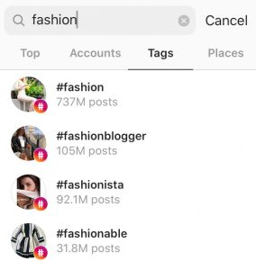

Instagram hashtags may seem like an annoying part of the Instagram experience. I mean, who’s actually looking at the “instalove” hashtag? A lot of people, as it turns out. Instagram hashtags are a critical part of Instagram. They contribute directly to Instagram’s algorithm and curated Instagram feeds. They’re also a critical part of getting your content seen.
All those hashtags stuck onto the end of every would-be influencer’s posts really aren’t for nothing. But finding the best Instagram hashtags is harder than it looks. There’s branding, popularity, and target audience to consider. And that’s not to mention that hashtags are a fickle thing and can change in popularity from day to day. Don’t worry, though – that’s why we’ve created this quick guide on how to search for the best Instagram hashtags – and how to use them.
A Good Instagram Hashtag Search Can Boost Your Brand
Simply speaking, Instagram hashtags are a way to categorize your content. By placing your #hashtag sign in the caption of your post, it’s then added to a larger feed of posts with the same hashtag. All public content with the same hashtag is displayed in the feed. You can add hashtags to Instagram stories, bios, and posts.
What differentiates hashtags is that they are quite literally designed to bring new eyes to your content. People will often do their own Instagram hashtag search to find something they’re interested in if they feel like their feed isn’t holding up. Some users even follow hashtags and get notified about the new content in the Instagram hashtag right on their feed. Using Instagram hashtags is an important part of the Instagram experience, so applying them to your content is a great way to connect to a target audience.
There’s No One-Size-Fits All
If you’re looking for a formula to search for the best Instagram hashtags, stop now. The best hashtags aren’t going to be the same for everyone. In fact, they may not even be the same month-to-month for you. Using the best Instagram hashtags is about finding what works best for your target audiences. If you’re a social media manager for a travel-focused startup, your target audience is going to look different than, say, a luxury jeweler’s. So it’s a good idea to make note of what’s consistently performing best for your content and use tools that can help you track the best Instagram hashtags for you.
Keep Your Eye on the Instagram Explore Page
A good place to keep your eye on in general is the Instagram explore page. The Instagram explore page is a good place to watch even if you’re not searching for hashtags because it shows you what kind of content is catching Instagram’s eye. Make a note of which hashtags people are using to get onto the explore page, too.

Three out of these pictures from my explore page today are hashtagged #sweaterweather. The trending hashtags can be fickle, so the explore page is a good place to check out what’s caught Instagram’s eye for the day!
Find the Best Instagram Hashtags for Your Audience
As we said above, the optimal Instagram hashtags will be different for different brands, who most likely have different goals! A fashion account is going to have different optimal Instagram hashtags than a food account or an interior design account. Experiment a bit with what you use, but try and keep your hashtags focused on the kind of followers you’d like to attract. While some famed hashtag like #follow4follow might get you a few new followers, they will probably be the wrong kind and ultimately drive down your engagement. And your engagement rate happens to be extremely important to your overall performance on the app! Don’t just tack on any random hashtag; Instagram users can see right through that.
How Many Instagram Hashtags Should I Use?
Although it may be tempting to go straight to the maximum hashtags, users can transparently see when an account is just trying to gain followers. #Love is Instagram’s most popular category by far, but that means that thousands of posts are filed under it every single day. So don’t just tack on all the most popular hashtags you can find. The Instagram hashtag maximum is thirty hashtags. But that’s a lot for anybody to scroll through. According to an analysis by TrackMaven, the best amount of Instagram hashtags to use is nine. Keep the hashtags relevant and focused to your content.
How to Conduct A Great Instagram Hashtag Search
While there’s no exact science to finding the best Instagram hashtags, there are a few things you can consider to find the things that will make your business stand out the most.
-
Look at your competitors and similar accounts
You may discover some hashtags you didn’t already know about this way, and add a new target to your audience.
2. Keep an eye on your insights.
If you have an Instagram business profile, look at your insights and the hashtags you’ve used on your most successful posts. Chances are your top posts have some hashtags in common. Make a note of which ones perform well together. You may strike gold again.
-
Use the Instagram hashtag search function.
Using the Instagram search function can easily help you find the best hashtags to use. Type in something relevant to your brand and then click “Tags.” Instagram will bring up a list of all the hashtags with this keyword and posts that are tagged with it.

Keep in mind that if a hashtag has a large following, it may mean new followers. Or it may mean that your content gets swallowed by a barrage of daily posts. It’s best to mix up hashtags with large and small followings for the best results.
A Secret Tool: HashtagsforLikes
If all of this sounds way too overwhelming, there’s a simple tool you can use to predict hashtag popularity. Hashtagsforlikes allows you to search the strength of hashtags you’re using. Just type a hashtag into the search bar and get tons of metadata including the number of posts with the hashtag and its longevity. While it’s not free, if you’re a brand looking to increase your reach, this is an incredible tool well worth the price.

The Most Popular Hashtags on Instagram
While there’s no science, these are the most commonly used and followed hashtags on Instagram in 2019:
Best General Hashtags
- #photooftheday
- #instagood
- #nofilter
- #tbt
- #igers
- #picoftheday
- #love
- #nature
- #swag
- #lifeisgood
- #caseofthemondays
- #instapic
- #instadaily
- #selfie
- #instamood
- #bestoftheday
Best Travel hashtags
- #travel
- #staycation
- #vacation
- #sunsout
- #resortwear
- #tourist
- #travelbug
- #solotravel
- #honeymoon
- #traveltuesday
- #wanderlust
- #wanderlustwednesday
- #travelgram
- #sun
Best Food Hashtags
- #instafood
- #omnomnom
- #foodporn
- #food
- #foodie
- #organic
- #healthyeats
- #goodeats
- #vegetarian
- #vegan
- #glutenfree
- #hungry
- #homemade
- #madefromscratch
Best Fitness Hashtags
- #lookgoodfeelgood
- #feeltheburn
- #nopainnogain
- #workingonabetterme
- #cardio
- #fitfam
- #yogafordays
- #fitlife
- #trainhard
- #noexcuses
Hashtags Are an Art, Not a Science
Finding the best Instagram hashtags is really about finding the best ones for you. It has more to do with the kind of followers you want to attract than the ones you already have. Vary between popular and not-so-popular hashtags. As with many things in Instagram, the more specific the better. Keep an eye on the explore page and your competitors, too. Using, searching for, and finding the best Instagram hashtags is an art, not a science. So keep at it until your process is perfect.